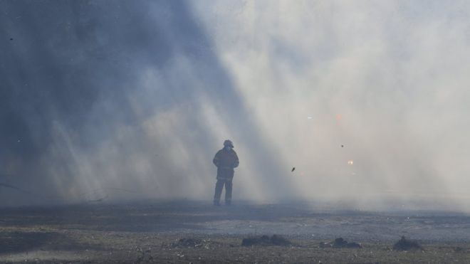
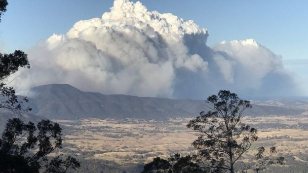
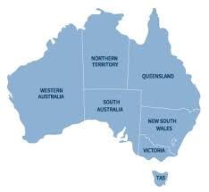

Almost 80 fires were burning along the state's coast on Thursday, having ripped through more than 1,000 hectares in recent days. No lives or homes were in immediate danger, according to officials.

Winter bushfires are uncommon but have flared up this year due to dry conditions, authorities say. Last week, the entire state of NSW was declared to be drought-affected. "It is fair to say that the fires we are seeing today is really a result of the drought," NSW Rural Fire Service Commissioner Shane Fitzsimmons said on Thursday.

He said a combination of dry vegetation, lack of moisture and strong winds over 100km/h (75mph) had caused the fires to spread quickly. "We don't even need the increased temperature [of summer]," he told the Australian Broadcasting Corporation. The state typically considers its bushfire season to start in the spring month of October and run until the end of March.

In addition to winter bushfires this year, however, authorities also battled blazes in late April. Fire bans were issued across most of NSW on Wednesday - something not seen in August for almost a decade, officials said. Mr Fitzsimmons said crews hoped to get "the upper hand" on some fires on Thursday, but efforts would be hampered by continuing winds.